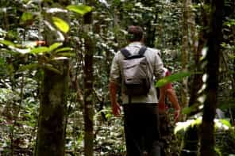
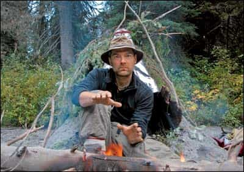

< < < Back
10 Reasons You Should Become A Survivalist – Return Of Kings
If you are the kind of man who reads Return of Kings, you are aware that all is not well in our current political, economic and cultural situation. You’ve taken the red pill, and the deeper you go, the more you believe that the layers of lies are endless. Manosphere sites are excellently documenting the perverseness of modern culture, and the mocking exposé of lies is amusing and intellectually stimulating. But as abstract as all of these truths about feminism and our hollowed out culture might seem, they lead to disastrous real world consequences in due time.
If you are honest with yourself, as all men should be, you know that the decline is happening and that our situation is going to get a lot worse before it gets better. Average people are increasingly conscious of the bad times that loom, but most consider it too painful to seriously contemplate. When questioned closely about what the future holds for America, most people get a worried look, and mumble something about how things will work themselves out. Reject this passivity and start concrete preparations for all emergencies, short or extended; leave rationalizing away tough truths to women.
The benefits of having modest preparations for a power outage or the extreme weather in a specific area should be obvious. Time after time people are “surprised” by disasters that they knew were inevitable. Assembling food, fuel, equipment and supplies for three days without electricity seems simple, and yet many Americans have little more than a can of tomatoes and a flashlight with dead batteries to weather the next emergency. While the basics to live for a few days in a grid down (no electricity, no water, no hearing gas, no sewer) situation are the absolute minimum that a sane person should have. But I believe that preparedness philosophy must go far beyond readiness for local events.
Every doom and gloomer has a pet theory about The End Of The World As We Know It (TEOTWAWKI), ranging from nuclear war to environmental destruction. TEOTWAWKI has been a preoccupation of peoples for thousands of years, from the Norse Ragnarok to the Christian Revelation to Saint John. It’s easy to mock such predictions; after all, “The World” is still here. And yet history is littered with extinct civilizations, “worlds,” if you will.
I’m not here to convince you of a specific theory of what will cause the inevitable collapse of the American nation state, because whichever one of the many plausible theories turn out to be correct (I personally believe that a slow, but accelerating economic collapse is already well underway), the conclusion is the same: We go from a world of cheap oil, super markets, and HBO On Demand to one in which daily survival is precarious. Our sick civilization can’t stumble on much longer, and it becomes us to prepare ourselves materially, physically, mentally, and spiritually. Calamity may strike tomorrow or years from now; it may unfold over the course of hours or decades, but it will come to America as the logical conclusion of our poor choices.

Acceptance of the preparedness movement has risen in the last six years, breaking down the stigma of “survivalism” that the news media handily associated with militias and cults in the eighties and the nineties. Thanks to the financial decimation millions of American’s experienced to benefit our corporate overlords, it became increasingly mainstream to be ready for the next event. The fallout of 2008 awoke many to the reality that the federal government will do nothing to help them in their hour of need. Prepping and survivalism aren’t just for your crazy uncle any more.
Preparedness is a rewarding journey, and I’ve compiled a list of reasons why you should take the first steps toward it immediately. You will see that getting ready to survive isn’t a theoretical project; it will dovetail with many of the game and personal improvement goals you probably have already.
1. You will learn useful skills
As Robert Heinlein said, “A human being should be able to change a diaper, plan an invasion, butcher a hog, conn a ship, design a building, write a sonnet, balance accounts, build a wall, set a bone, comfort the dying, take orders, give orders, cooperate, act alone, solve equations, analyze a new problem, pitch manure, program a computer, cook a tasty meal, fight efficiently, die gallantly. Specialization is for insects.” Survival encompasses a broad skill set that can improve you in almost every area. Cooking tasty meals from scratch is a trick that you can put to work right away of or dinner dates. Become a handy carpenter and you can do your own repairs and build your own furniture. All of the skills you need to learn, like sharpening a knife, using a saw, and mending clothes all have great value in your current life.
2. You will see the world with different eyes
Are you ready for a second regimen of the red pill? A preparedness mindset will make you look at the world differently. When you go to a supermarket you won’t just see aisles of food. You’ll see exotic crops from all over the world, delivered by a tenuous, fossil fuel driven supply chain managed by complex computers. When you look at American cities, you will see places that would become unlivable within weeks of the grid going down. You will see highways that would quickly become parking lots if thousands tried to flee at once. You will see that America is addicted to excessive consumption and waste. You will see that people don’t care about tomorrow as long as they have their luxuries today. Start asking yourself “what if?” questions. What would you do if you lost your job? What would you do if you couldn’t buy food at the grocery store? What would you do if you couldn’t get gas for your car? How would you evacuate in an emergency? Why is our the government increasingly treating citizens as enemies? Why are we encouraged to mindlessly consume instead of making things for ourselves?

3. You will meet interesting people
The preparedness movement is broad, and can encompass anyone from Amish farmers to investment bankers. I’ve met many people in my travels who made preparedness part of their lives, and every one of them was an interesting person who taught me something. Growing up in Alaska, I helped a retired hunting guide build an addition on his log cabin homestead that was so remote that it could only be accessed by a Super Cub bushplane or a long walk through pathless woods. From a conspiracy theorist friend who ran a gun store from garage to hippies in a yurt commune, the preppers I’ve met have been fascinating people to be around.Prepared folks are always eccentric and sometimes even a little crazy, but the practical lessons I’ve learned from them have been invaluable.
4. You will meet a better quality of women
There is a significant minority of sensible American women who don’t want to live the dramas that are advertised on reality TV and the Internet and who reject mindless consumerism… and I’m not just talking about hippie chicks who don’t shave body hair. That’s been one of the best aspects of prepping for me: meeting like minded women who are ready to dispense with lifestyles and start actually living.
5. You will get into shape
Much of the fitness culture is driven solely by aesthetics, but a healthy body is vital to survival. If you don’t have a strong body, you don’t have anything. Wilderness hikes, back packing trips, snowshoeing, running, kettle balls, spinning, and old fashioned lifting sessions; anything to contribute to your overall stamina and strength is good. Remember to cultivate all around excellent fitness instead of focusing on one aspect of training too much.
6. You will conserve money and natural resources
Preparedness is an opportunity to cut expenses in many areas. The skills you’ve learned, like cooking and automotive repair turn into huge cash savings. By buying food and other consumables in bulk, you can get much more for your dollar. A variety of do it yourself projects, as modest as a few vegetable beds or as ambitious as building your own house will further contribute to a frugal lifestyle. By eliminating waste in all areas, you will have more funds to save, invest, prepare, and travel. All of this contributes to attaining a state of financial preparedness, living debt free and frugally, making wise investments, and keeping adequate money in savings. The goal is to be recession proof, rendering the whims of Wall Street irrelevant to your life.
7. You will be inspired
I read a lot of survival literature, both fiction and nonfiction. These stories show a man what is possible with determination and perseverance. Hatchet, which I read when I was younger, is the story of a boy who finds himself stranded in the Canadian wilderness with nothing but a small ax and the clothes, using his wits to survive the summer. Louis L’Amour’s novel Last of the Breed is another great fictional story of an US Air Force pilot escaping a gulag in the Soviet Union, surviving the harsh Siberian winter as he flees across the wilderness. But the best stories are the non-fiction stories, the ones that make you realize how insignificant your personal challenges up to this point have been. The account of Earnest Shackleton’s Antarctic expedition aboard his ship The Endurance is one classic. Lewis and Clark’s account of their transcontinental expedition is another timeless story, as the explorers lead their party through the heart of the uncharted North American continent.
8. You will develop eat healthier eating habits
A nutritious diet in America is seen as status symbol and a fashion statement rather than a path to a sound body. Expensive diets come and go every year, each touted as the ultimate in what you should eat. Imagine that you didn’t just eat a gluten free or Paleo diet to keep up with the newest fad. Instead, visualize using strength and a rugged constitution to carry yourself through life threatening situations; your diet becomes a primary concern. Your prepping habits and skills, like exercise, home cooking, gardening, hunting, etc. both necessitate and facilitate a good diet.
9. You will have fun
Prepping is a gateway to many hobbies. Shooting, which is a vital survival skill for hunting and self defense is also something I enjoy recreationally. Gardening is relaxing, as well as interesting opportunity to learn about botany, geology, and meteorology. Cooking becomes a way to eat tasty way to feed yourself and explore new cuisine.
10. You will become more independent
Enjoy the confidence you gain when you know that you are resilient no matters what the future holds. At a time when everyone is completely immersed in a society that is against all things masculine, you will be able to live on its outer edges as a free man.
If you are a red pill man, you may think that there isn’t any hope for defeating the forces against us. But consider how quickly the other side would evaporate as their blue pill beliefs hit the hard rocks of reality. As men who are learning to see the world as it is, rather than the way we want it to be, we enjoy a significant advantage. If you’re reading a blog like this one, you are already on the path to mentally preparing yourself. It is time to accompany those mental preparations with concrete physical preparations as well. Winter is coming.
Read More: The Thrill Of The Mountain Makes You A Man


{kind=link}
{kind=link}